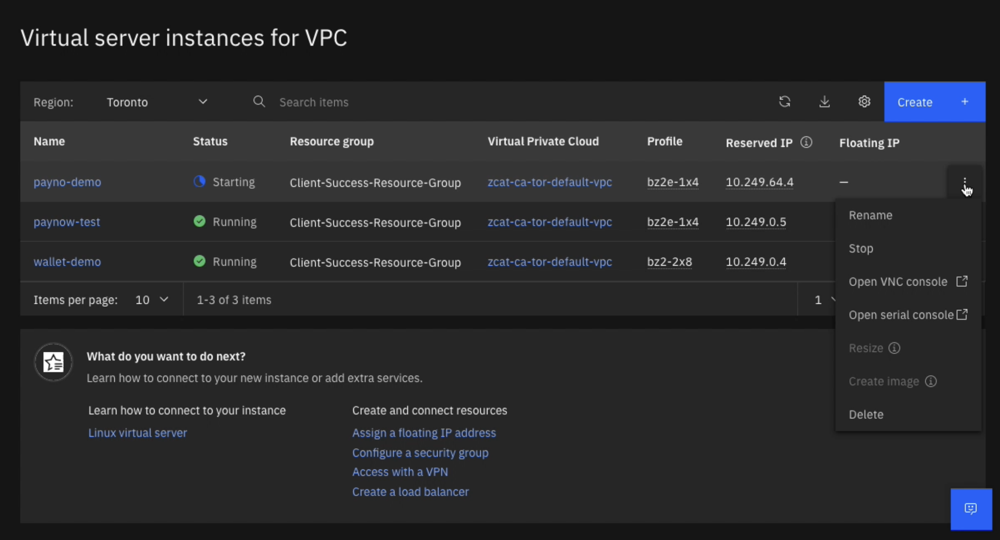
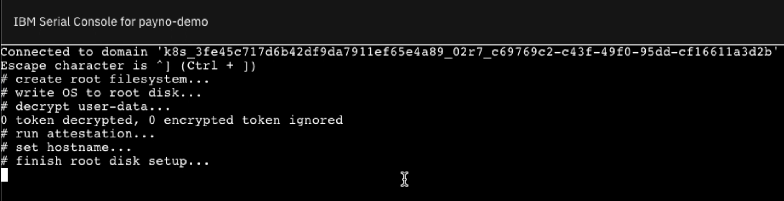
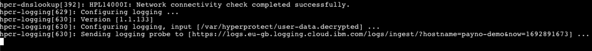
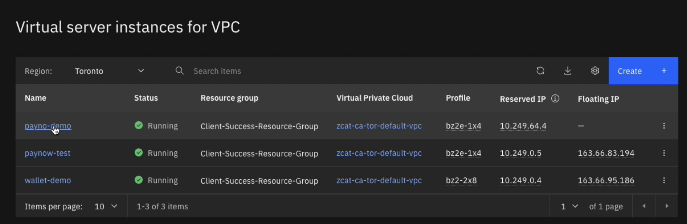
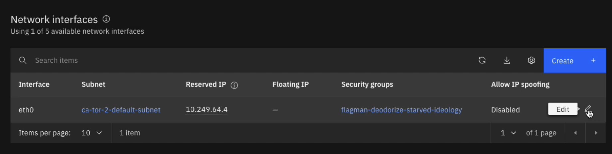
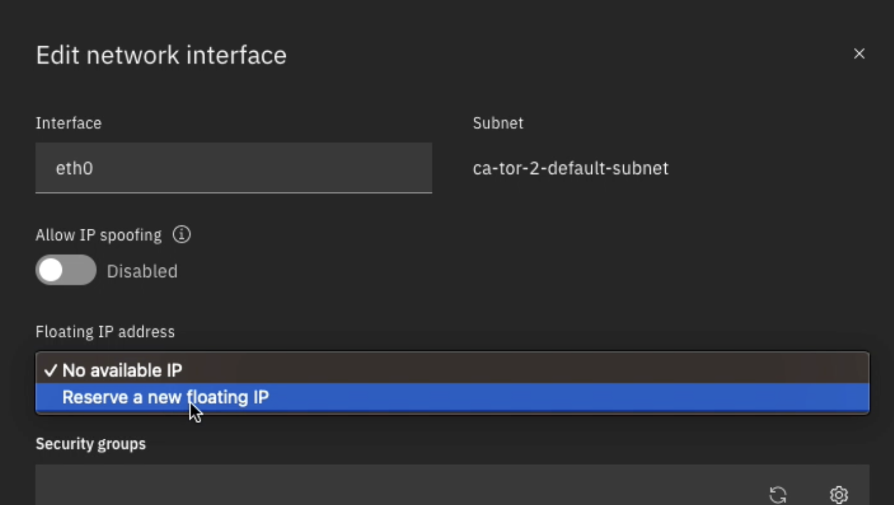
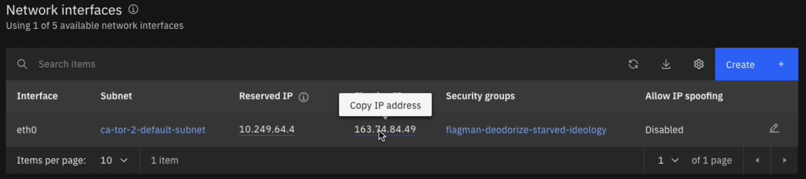
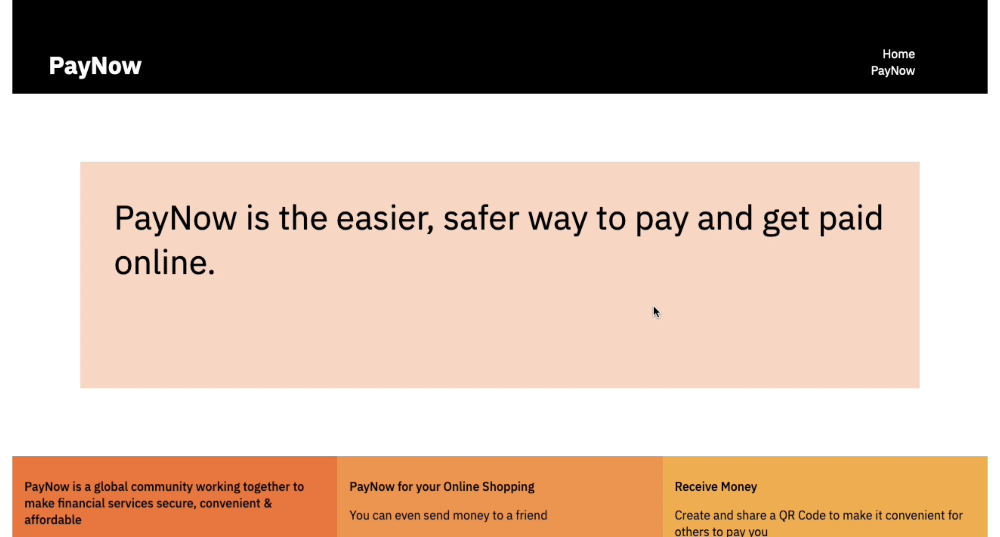

Configuration of a Hyper Protect Virtual Servers for VPC Instance on IBM Cloud
WATCH THIS DEMONSTRATION
Peter Szmrecsanyi (IBM Hyper Protect Services - Solution Architect for zCAT) demonstrates how to configure and deploy a Hyper Protect Virtual Servers for VPC instance on IBM Cloud, using the Contract generated in the previous module.
- From the IBM Cloud dashboard, click the stack icon in the top-left corner of the interface to expand the drop-down menu options.
- From the left-side menu, drill down into
VPC Infrastructure>Compute>Virtual Server Instances.
- Once the details page for
Virtual Server Instances for VPChas loaded, select theCreate +blue icon near the top-right corner of the interface. This will redirect the web browser to the configuration screen.

- The instructions that follow will guide you, top to bottom, across each of the configuration fields available for
Virtual Server Instances for VPC.
IBM CLOUD IS CONTINUOUSLY UPDATING
Be aware that the IBM Cloud interface is continuously evolving and updating; it may be the case that the order of these options, or the exact specifications/fields that they offer, may differ slightly from the lab guide instructions or accompanying video recordings.
SERVER TYPE
- Specify the architecture for your VPC instance. Select the option for
IBM Z, LinuxONE.
CONFIDENTIAL COMPUTING
- Switch this to
ON. Note that the Confidential Compute option on the configuration page is only available when selecting a Z/LinuxONE architecture. If you change the Server Type to a different (non-IBM Systems) type of architecture, the Confidential Compute option is unavailable.
LOCATION
- Select the location in which you wish the VPC instance to be deployed.
DETAILS
- Provide a name for your VPC (for example,
paynow-demo) and a resource group (any resource group to which your account belongs is acceptable).
IMAGE AND PROFILE
-
Image should be set automatically to
Hyper Protect. This is a result of our activation of the Confidential Computing option earlier in the configuration steps. Click theChange Imagebutton to the right of the table to specify which version of IBM Hyper Protect that you wish to utilize for this deployment. At the time of publishing, there are two options (version 10 and 11) available. Version 10 supports Docker containerization, whilst Version 11 supports Podman containers. It is recommended that you use the latest Image version (11 or higher). -
Profile should be set to
Balancedand can be adjusted by clicking theChange Profilebutton to the right of the table. By default, Profile will automatically be configured for "Balanced", which corresponds to the lowest-cost (but also lowest-performing) configuration of the VPC Profile. If a real-world demonstration of this technology requires additional vPCUs, memory, bandwidth, and so on, then it is recommend that you increase the Profile value as appropriate. Higher-tier Profiles are available from the drop-down menu and come at greater cost compared to the default ("Balanced") configuration.
SSH KEYS
- SSH keys are optional for every VPC deployment, and in the case of this lab they are NOT required. Leave this field as blank.
STORAGE
-
Boot Volume: Leave as the default recommendation. Users have the option to supply their own storage as a boot volume if they wish, but it is NOT required for this lab.
-
Data Volumes: By default, this table is empty for most users — and because data volumes are NOT required for the purposes of this lab, you may ignore this field.
NETWORKING
- A default virtual private cloud network will be generated by IBM Cloud automatically. You may keep the existing network (recommended) or create one of your own.
NETWORK INTERFACES
- A network interface is automatically defined by IBM Cloud. It is recommended that you use the default value, rather than define one yourself.
ADVANCED OPTIONS
- User Data: click on the title / box to expand the options available to you. This is the field into which you must supply the Terraform-generated Contract that was created earlier. You may either copy and paste the contract details directly into the text field, or upload a Contract document from your desktop.
- At this stage, the VPC has been fully configured and could potentially be deployed into a live environment. Beyond this point, your personal IBM account and credit card WILL BE BILLED — unless you are willing to accrue and pay these charges, you should back out now from the configuration screen on IBM Cloud.
COSTS
Due to costs that potentially may be incurred from deploying a live VPC or HPVS instance on IBM Cloud— and because sellers and partners must use their own personal IBM Cloud accounts for previewing the IBM Cloud catalog —it is recommended that those taking this course DO NOT deploy any HPVS instances for this Level 3 training, unless:
-
You have a valid client opportunity number, in which case you may use that code to apply for a Hyper Protect Services "Proof of Concept" engagement — which will fund the demo environment for your client opportunity. Follow the procedures outlined HERE for how to apply.
-
You have access to an IBM internal paid account for IBM Cloud, in which case billing will be charged to your respective IBM department, instead of your personal account. Follow the procedures outlined HERE for how to apply.
-
You are willing to accept the charges to your personal IBM account and the credit card associated with that account. The IBM enablement team cannot reimburse such costs and any costs taken on by the IBM account are the responsibility of the user.
IBM sellers and technical sellers, who are required to produce a Stand & Deliver recording of the hands-on demonstration as part of their accreditation process, you will NOT be required to show (on screen) anything beyond the initial configuration steps for Hyper Protect Virtual Servers for VPC on IBM Cloud. Do not deploy the instance, unless you are prepared to finance it on your personal IBM Cloud account. Furthermore, you are not required to record any of the steps involving the hypothetical PayNow application, as doing so would require deployment of a live instance.
IBM business partners, who receive accreditation via a passing grade on a multiple-choice test, will only need to answer questions based on the initial configuration steps of Hyper Protect Virtual Servers for VPC on IBM Cloud. Quiz questions will not cover the screen readouts or other material involving either the PayNow application or a fully deployed instance. As mentioned previously, do not deploy the IBM Cloud instance into a live state unless you are prepared to self-finance any potential billing on your personal IBM Cloud account.
Optional: It is recommended that you follow along and read the instructions given below. But due to the potential cost obligations, it is not required that you perform these tasks yourself — unless you are willing to incur the expenses to your personal IBM Cloud account.
- If you do create an instance (using the
Create Virtual Serverbutton) at this point, the IBM Cloud dashboard will automatically redirect back to theVirtual Server Instances for VPCdashboard, where you can watch the progress of the VPC instance as it provisions.
- To track the progress of the deployment in further detail, look along the far right side of the provisioning VPC instance for an icon resembling three vertically stacked dots. Click that icon to open up a drop-down menu and select the
Open Serial Consolebutton from the options.

- After the
Serial Consolehas loaded, wait for the console terminal output to read "Configuring logging..." and "Sending logging probe to...", similar to the messages captured in the following screenshot. Once those messages (or something quite similar — the variables for your particular instance may vary) the provisioning of the VPC instance is complete. Return to theVirtual Server Instances for VPCdashboard on the IBM Cloud page.

- Click the name of the deployed
paynow-demoinstance from the table to drill down into the instance details.

- Once the details panel has finished loading, scroll down to the bottom of the page and locate the
Network Interfacessection. A single interface should be listed, corresponding to the default subnet that was selected in the Networking section of the IBM Cloud configuration steps that were performed earlier.
- On the far-right side of the table entry, click the
Edit(pencil) icon to pull open anEdit Network Interfacepanel.

- Within the
Floating IP Addressfield, change the value to Reserve a new floating IP. Once satisfied, clickSaveand the details panel will close.

- Notice that the IBM Cloud dashboard will refresh and a new
Floating IP Addressis now assigned to the Network Interfaces section. Now you are ready to examine the PayNow application user interface.
- Copy the
Floating IP Addressfrom the Network Interfaces section.

Open a new web browser and into the address field enter:
ADDRESS AND PORT
Note that :8443 denotes the port address of the PayNow application. Replace the FLOATING_IP_ADDRESS characters with the value unique to your environment.
WARNING
You may receive a warning error about a Potential Security Risk Ahead, an Unsecured Website, or so on. You can safely ignore this error and proceed to the web page.
Your web browser will now open to the hosted PayNow application web portal.
